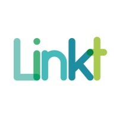
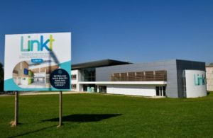
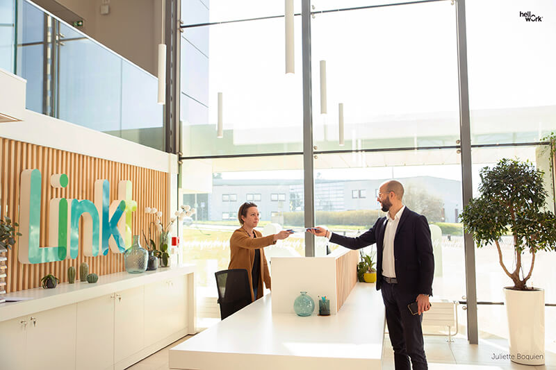

Abraham EMMANUEL
Étudiant en BTS SIO option SISR • Passionné par les infrastructures réseaux et la cybersécurité
Lycée Gustave Flaubert, Rouen • BTS SIO option SISR

Étudiant en BTS SIO option SISR • Passionné par les infrastructures réseaux et la cybersécurité
Lycée Gustave Flaubert, Rouen • BTS SIO option SISR
Passionné par l'informatique et les technologies réseau depuis mon plus jeune âge, je suis actuellement en 2ème année de BTS SIO option SISR au Lycée Gustave Flaubert à Rouen. Mon parcours académique et mes expériences pratiques m'ont permis de développer des compétences solides en administration systèmes et réseaux, cybersécurité, virtualisation et support technique.
Curieux et autodidacte, je m'intéresse particulièrement aux nouvelles technologies et aux bonnes pratiques en matière de sécurité informatique. J'apprécie les défis techniques et cherche toujours à optimiser les infrastructures pour les rendre plus performantes et sécurisées.


1 Rue Guglielmo Marconi • 76130 Mont-Saint-Aignan • Normandie
Stage du 12 janvier au 13 février 2026
Linkt est un opérateur télécom spécialisé dans les solutions de connectivité
et de fibre optique pour les entreprises et les collectivités.
L’entreprise propose des services de Très Haut Débit, de téléphonie et
d’infrastructures réseau afin d’accompagner les organisations dans leur
transformation numérique.
Le siège de Linkt est situé à Mont-Saint-Aignan en Normandie.
L’entreprise dispose d’une équipe technique chargée du support client,
du diagnostic des incidents réseau et de l’exploitation des infrastructures télécom.
Vision de la vidéo de présentation :
Découvrir Linkt en vidéo


M. Valentin PICHOT
Chef d'équipe • valentin.pichot@linkt.fr
Projet de sécurisation d’une infrastructure réseau avec mise en place de règles de filtrage, étude de l’architecture réseau et utilisation d’un pare-feu Stormshield.
Contexte : projet réalisé en formation dans un environnement simulé de clinique.
Objectif : sécuriser les flux réseau et contrôler les accès entre les différentes zones.
Résultat : meilleure compréhension de la logique de filtrage, de la segmentation réseau et de la sécurité périmétrique.
Mise en place d’une répartition de charge entre deux serveurs web afin d’assurer une meilleure disponibilité du service.
Contexte : projet technique réalisé en formation autour de la haute disponibilité.
Objectif : répartir le trafic entre plusieurs serveurs web avec HAProxy.
Résultat : validation du fonctionnement du load balancing avec tests de répartition sur les nœuds.
Administration d’un conteneur Linux avec découverte de l’environnement, manipulation de fichiers, hostname et adresse IP.
Contexte : TP d’administration système sous Linux via conteneur Docker.
Objectif : découvrir l’environnement d’un conteneur et effectuer des manipulations d’administration.
Résultat : acquisition de bases concrètes en Linux, conteneurisation et commandes système.
Participation au support client niveau 1, à la gestion de tickets et au traitement d’incidents dans un environnement télécom.
Contexte : stage en entreprise au sein d’un opérateur télécom régional.
Objectif : découvrir le support utilisateur, la gestion des tickets et le traitement d’incidents.
Résultat : développement de compétences en relation client, qualification des demandes et support de premier niveau.
Recenser les équipements, administrer les ressources et maintenir les environnements informatiques de manière organisée et sécurisée.
Prendre en charge les incidents, assister les utilisateurs et apporter une réponse adaptée aux problèmes rencontrés.
Participer à la mise en valeur des activités de l’organisation grâce à des outils numériques et à une communication adaptée.
Planifier, organiser et suivre les tâches d’un projet en respectant les objectifs et les contraintes.
Installer, configurer et rendre accessible un service informatique aux utilisateurs dans de bonnes conditions.
Faire de la veille, développer ses compétences et construire progressivement son parcours professionnel.
Dans cette partie, je présente ma fiche de synthèse E5 ainsi que plusieurs productions permettant d’illustrer les compétences mobilisées pendant ma formation.
Le phishing est une technique utilisée pour tromper les utilisateurs et récupérer des informations sensibles. Ma veille porte sur l’évolution de ces attaques, notamment avec les faux sites, les emails ciblés, le spear phishing et l’usage de techniques de plus en plus avancées.
Les passkeys représentent une nouvelle méthode d’authentification plus sécurisée que les mots de passe classiques. Ma veille porte sur leur fonctionnement, leur adoption par Apple, Google et Microsoft, ainsi que leur rôle dans la réduction des risques liés au phishing.
J’utilise principalement des sites spécialisés, des blogs techniques, des sources institutionnelles et des actualités liées à la cybersécurité.
Je classe les informations par thème, puis je sélectionne les articles les plus pertinents afin d’en rédiger une synthèse claire.
Je consulte mes sources de manière régulière, en moyenne une à deux fois par semaine, afin de suivre les évolutions récentes.
Source : Source spécialisée cybersécurité
Synthèse : l’article montre que les campagnes de phishing deviennent plus crédibles et plus ciblées, avec des messages mieux rédigés et des pages frauduleuses plus réalistes.
Projection entreprise : en organisation, cela montre l’importance de la sensibilisation des utilisateurs et du renforcement des moyens d’authentification.
Source : Source spécialisée / acteur du numérique
Synthèse : l’article explique comment les passkeys remplacent progressivement les mots de passe classiques grâce à une authentification plus simple et plus sécurisée.
Projection entreprise : dans un cadre professionnel, cette technologie peut réduire les risques de compromission de comptes et améliorer l’expérience utilisateur.
N'hésitez pas à me contacter pour toute opportunité professionnelle, stage, alternance ou question concernant mon profil. Je serai ravi d'échanger avec vous !